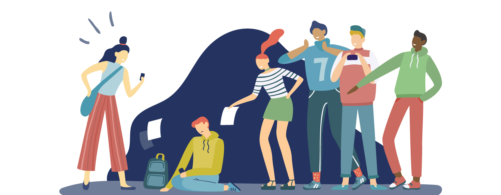

Of course, plastic surgery does bring a lot of potentials and hope to the table, however, it also presents as a negative thing usually looked down upon in modern society. Essentially, someone who decides to have plastic surgery done to themselves, most commonly cosmetics, society views them as this artificial beings with insecurities. That has been proven various plethora of times in social media. For example, celebrities face harsh criticism about plastic surgery through the use of jokes on platforms such as TikTok and Instagram.
Kylie Jenner, for instance, has faced much hate and potential jealousy over her having plastic surgery. Though Jenner is a billionaire with her outrageously successful make-up company, Kylie Cosmetics, numerous people have looked down and even insulted her on social media for her use of cosmetics. Kylie, however, has presented to not give these ‘anonymous internet trolls’ a second look as she says &lsduo;They aren't worth my time&rsduo;. Kylie's actions and resistance to these haters can be seen as admirable acts, but many aren't as resilient. Obviously, the vast vast majority of plastic surgery patients are not billionaires with millions of supporters worldwide. This can propose as a problem to the majority as they are uncomfortable doing what they want to do or even degraded for doing something completely innocent.
